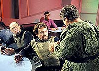
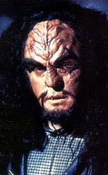
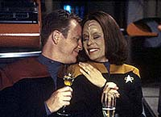
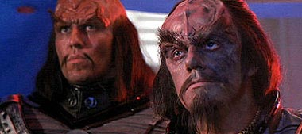
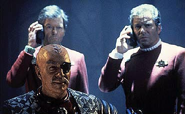

|
Para
no dizer que no falei de Klingons
 Como
andei falando anteriormente de outros povos famosos que existem na
galxia de Roddenberry, este ms resolvi homenagear outros velhos
e queridos companheiros de Jornada. Os Klingons devem ser os
mais famosos e populares "viles" at mesmo para aqueles
que conhecem superficialmente o que tem sido feito desde o incio
das aventuras da Enterprise. Como
andei falando anteriormente de outros povos famosos que existem na
galxia de Roddenberry, este ms resolvi homenagear outros velhos
e queridos companheiros de Jornada. Os Klingons devem ser os
mais famosos e populares "viles" at mesmo para aqueles
que conhecem superficialmente o que tem sido feito desde o incio
das aventuras da Enterprise.
Eles merecem destaque neste universo porque passaram a ser vistos de
meros viles que atrapalhavam os planos da Federao a um povo
capaz de seguir sua prpria trajetria atravs dos problemas e
das glrias de muitos personagens marcantes. Acho mesmo que talvez
um dia a Paramount possa ser mais ousada e fazer uma minissrie
centrada neles.
 A
maioria dos leitores deve saber que os Klingons foram criados por
Gene L. Coon, que ajudava (e s vezes brigava com) Roddenberry. Sua
participao ajudou a dar uma dinmica deferente na evoluo
dos episdios da Srie Clssica. Assim, ficaria muito mais
difcil para a audincia entender uma Federao sem
"inimigos" pr-determinados, numa realidade marcada pelo
bem e o mal. Mas, no caso dos Klingons j se desenhava um quadro
onde eles no seriam apenas conquistadores malvados, como foi
mostrado no episdio de estria "Errand of Mercy".
H outros tantos episdios onde eles so mais ridicularizados
porque o prprio roteiro farofa pura, como na vez em que
conhecemos uma grande ameaa para eles: os pingos, ou tribbles.
As outras sries de Jornada mantiveram um alto conceito
sobre os Klingons, desenvolvendo muito mais o seu potencial. Na Nova
Gerao, ao longo de vrios episdios, Worf passa a ser
membro da tripulao da ponte e deixa pra trs aquela imagem de
um personagem deslocado no meio dos humanos, que s sabe regular
sensores e calibrar os sistemas de armas.
 Em
Deep Space Nine os Klingons comearam aparecendo como amigos
de Dax, beberres etc. e chegaram a ser os melhores aliados na luta
contra a invaso do Dominion. Muito dessa mudana se deve ao fato
de o prprio Worf ter ido para a estao, ajudando a estabelecer
novamente um canal de maior familiaridade com a audincia, que, na
ocasio, no estava em patamares muito satisfatrios. Foram
apresentados episdios que ampliaram temas e detalhes de sua vida
particular e do relacionamento de seu povo com a Federao.
 Em
Voyager, infelizmente, s temos BElanna com alguns
roteiros de "flashbacks" e de situaes inusitadas, como
uma nave cheia de klingons perdidos na galxia, atrs de um
messias, que eles confundem com a filha dela com Tom Paris.
Entretanto, at chegar nessa condio de maturidade, muito raio
foi disparado dos disruptores. Neste sentido, o cinema j foi um
momento onde foram dadas algumas pinceladas de transio entre uma
viso estereotipada e uma verso mais completa. No foi s a
maquiagem que mudou quando os Klingons apareceram na tela grande.
As suas aparies no cinema tiveram seu ponto alto atravs da
contribuio de dois grandes atores de mesmo nome. Christopher
Lloyd e Christopher Plummer, repectivamente Kruge, no terceiro, e
Chang, no sexto filme de Jornada. Em "Jornada nas
Estrelas III" os Klingons so de novo os opositores da
Federao na busca do segredo do Projeto Genesis. Kruge o
responsvel por causar a agonia de Kirk, por causa do
aprisionamento de seu amigo Spock, de seu filho David e da tenente
Saavik. O conflito aumenta mais ainda com a morte de David e a
destruio da Enterprise.

A dor de ter perdido duas coisas importantes faz de Kirk descarregar
toda a sua raiva no chefe Klingon, disputando a vitria na base do
muque, num planeta que se desfacela por inteiro. interessante ver
nosso heri tentando ainda ajudar o Klingon a se salvar do precipcio,
mas, dada a tentativa de pux-lo, Kirk o mata a base de botinadas
na sua testa enrugada como casco de tartaruga. Do ponto de vista do
Klingon bom lembrar que o Projeto Genesis seria como uma arma
altamente sofisticada, que comprometeria o equilbrio de poder
entre os dois povos. A atuao de Lloyd s no foi maior porque
o prprio roteiro estava contido em limites bem estabelecidos, com
uma histria de transio entre dois momentos bem marcantes no
universo de Jornada, por conta do segundo e do quarto filmes.
Outros Klingons que apareceram fizeram bem o dever de casa,
cooperando ou trocando escaramuas com a Federao. No sexto
filme, o coronel Worf (av do tenente Worf), tambm encarnado por
Michael Dorn, quem se sobressai nessa safra mediana de
personagens. claro que esse meu julgamento est contaminado pela
conhecida e aplaudida experincia do ator em representar uma figura
muitssimo querida e bem aproveitada ao longo do tempo, conforme
disse antes.
Chang aquele que atia a dor de Kirk e se envolve num compl
para fazer malograr o acordo de paz com a Federao, neste mesmo
filme. Aqui a atuao de Plummer mais ampla, em razo do prprio
roteiro e do contexto de fechamento das aventuras de Kirk e sua
turma. Ele no s um Klingon mais vingativo, mas tambm mais
arguto, porque deixa a tripulao da Enterprise beira do
colapso, desde o assassinato do Chanceler Gorkon at o ataque final
contra a nave e a tentativa de matar os lderes do acordo de
Khintomer. A maneira espetacular como Chang provoca Kirk j tinha
comeado desde o jantar de recepo a bordo da Enterprise. Lembro
aqui quando ele chega a recitar os versos de Sheakspeare com aquele
ar de pirata do espao desprendendo o mximo de malvadeza e elegncia,
somente comparvel ao de Khan, no segundo filme. No foi toa
que exatamente o ltimo dos filmes da Srie Clssica pde
mostrar aquele dentre os Klingons que mais honrou a glria de
Kahless. At agora, sentimos saudades de sua participao, apesar
dos outros que vieram depois.

No temos ainda idia completa de como os Klingons podero ser
apresentados nos prximos filmes, exceo do
tenente-comandante Worf. Resta esperar se teremos outras aventuras
da Nova Gerao aps "Nemesis" e ver como
a barca anda. Aposto na idia de que os Klingons estaro sempre
conosco, ajudando a contar boas estrias mais ou menos srias,
apesar da contribuio de outros tantos que povoam nossas telinhas
e telonas. Eles s no so melhores porque no existem alm da
nossa imaginao.
Cludio
Silveira escreve regularmente sobre os filmes com
exclusividade para o Trek Brasilis
|